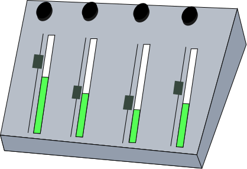

The problem with the current music industry
Today, any musician doesn't only have to pay for the audio workface they use, but also the virtual instruments required for any demos or proffesional work they create. What these people need is an extensive free library of virtual instruments and audio samples.

How we can fix this
We are creating a community of developers/musicians who are willing to help in providing free VST plug-ins and audio samples. Join us by heading to
GitHub and start helping us create what so many musicians need.